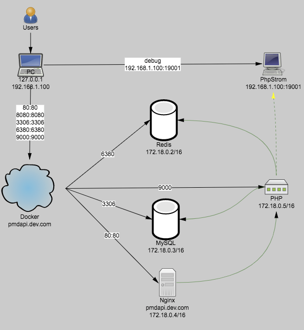
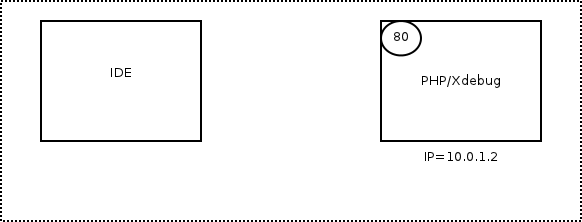
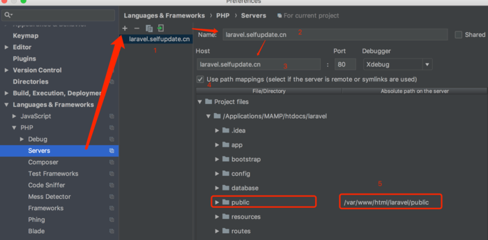

Docker 下 PHPSTORM + XDEBUG 调试
xdebug 链路与原理
Docker + LNMP + xdebug

xdebug 原理

- xdebug 调试器插件开启调试，此时它会监听 PHP 服务器中 xdebug 发送来的数据
- 向 PHP 服务器发送 uri 请求，当 PHP 的 xdebug 模块检测到请求需要开启调试时（此请求
cookie中包含XDEBUG_SESSION字段） - xdebug 将请求的响应挂起，并进入调试模式（收集 PHP 当前的运行数据）
- xdebug 根据配置与 xdebug 调试器建立连接（遵循 BGDp 协议），将收集到的运行数据发送到
remote_host.remote_port，你在调试器中就能看到当前断点的运行数据了 - 单步调试直至结束，PHP 服务器返回响应数据。
xdebug 配置
将 xdebug 配置写入 php.ini 文件中，具体配置如下：
[xdebug]
xdebug.auto_trace = On
xdebug.profiler_append = 0
xdebug.profiler_enable = On
xdebug.profiler_enable_trigger = 0
xdebug.profiler_output_name = "cachegrind.out.%t-%s"
xdebug.remote_enable = 1
xdebug.remote_handler = "dbgp"
xdebug.remote_host = docker.for.mac.localhost
xdebug.trace_output_dir = "/tmp/"
xdebug.remote_port = 9001
xdebug.idekey = "PHPSTORM"
xdebug.remote_autostart = On
关于 remote_host
在 Mac 中使用 Docker 时，xdebug.remote_host 不能再配置为 127.0.0.1 或 localhost，因为容器中不能直接通过 127.0.0.1 访问容器的主机。
可使用如下配置：
xdebug.remote_host = docker.for.mac.localhost
PHPSTORM 配置
需额外配置 mapping

服务器在 Docker（或虚拟机） 中时，需要在 PHPStorm 配置 mapping，将所访问项目的实际目录对应到虚拟机中目录。